측량기능사 (2003-01-26 기출문제)
1과목: 임의 구분
1. 어떤 기선을 측정하여 다음 표의 결과를 얻었다. 최확값을 구하면 다음 어느 것인가? (단, 오차는 측정회수에 비례)
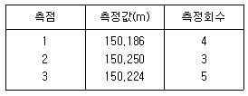
- 149.782m
- 149.218m
- 150.782m
- 150.218m
(정답률: 78%)

2. 반경 11km 이내의 지역에 대하여 지구의 곡률을 고려하지 않고 평면으로 간주하는 측량은?
- 평면 측량
- 대지 측량
- 측지 측량
- 평판 측량
(정답률: 65%)
3. 측량의 대상물은 지표면, 지하, 수중 및 해양, 우주공간등 인간활동이 미칠 수 있는 모든 영역인 정량적 해석과 정성적 해석으로 크게 나누어 진다. 다음 중 정성적 해석에 속하는 것은?
- 특성 해석
- 형상 결정
- 위치 결정
- 크기 해석
(정답률: 52%)
4. 두 점간에 거리를 측정하여 중등오차 ± 3mm를 얻었다. 이 두 점간의 확률오차를 계산한 값은?
- ± 1.4225mm
- ± 2.0235mm
- ± 1.0235mm
- ± 2.8449mm
(정답률: 33%)
5. 그림에서 AC, AD, CE의 거리를 측정하여 다음 값을 얻었을 때 이것으로 AB의 거리를 구하면 얼마인가? (단, AC = 30m, AD = 40m, CE = 62.5m)
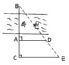
- 51.3m
- 52.3m
- 53.3m
- 54.3m
(정답률: 44%)
6. 장애물이 있어 직접 거리를 측정할 수 없을 때 사용하며 두 측점에서 시준하여 얻어지는 방향선의 교점으로부터 도상의 위치를 정하는 평판측량 방법은?
- 후방교회법
- 전진법
- 전방교회법
- 방사교회법
(정답률: 32%)
7. 기준선으로부터 어느 측선까지 시계 방향으로 잰 각을 무엇이라 하는가?
- 방향각
- 방위각
- 연직각
- 수평각
(정답률: 62%)
8. 삼각 측량방법은(도상 계획) ⇒ ( ) ⇒ (조표) ⇒ (기선 측량) ⇒ … ⇒ (삼각망의 조정)순으로 실시한다. 괄호 안에 적당한 것은?
- 각 관측
- 수평각 관측
- 삼각망 조정
- 답사 및 선점
(정답률: 83%)
9. 평판측량에서 축척 1/600의 도면을 작성할 때 도상의 위치허용 오차를 0.2㎜로 하면 구심오차는 어느 정도까지 허용되는가?
- 4㎝
- 5㎝
- 6㎝
- 7㎝
(정답률: 42%)
10. 전진법에서 변수가 16일 때 허용되는 폐합오차는? (단, 제도오차를 0.2mm까지 허용하는 것으로 함)
- 0.8mm
- 1.0mm
- 1.2mm
- 1.4mm
(정답률: 33%)
11. 수평각 측정에 있어 3대회 관측에서 초독의 위치로 옳은 것은?
- 0° , 30° , 60°
- 0° , 60° , 120°
- 0° , 45° , 90°
- 0° , 90° , 180°
(정답률: 53%)
12. 평판 측량을 실시한 결과, 폐합 트래버스에서 생기는 폐합 오차가 허용한도내 일 경우에 오차 배분은 어떻게 하는가?
- 변의 크기에 비례하여 배분한다.
- 변의 크기에 반비례하여 배분한다.
- 각의 크기에 비례하여 배분한다.
- 각의 크기에 반비례하여 배분한다.
(정답률: 30%)
13. 트랜싯으로 수평각을 측정할 때 시준축 오차를 제거하는 방법으로 옳은 것은?
- 배각법으로 측정하여 평균을 취한다.
- 시계와 반시계방향으로 측정하여 평균을 취한다.
- 양쪽 버어니어에서 읽은 값의 평균을 취한다.
- 망원경의 정.반위 위치에서 측정하여 평균을 취한다.
(정답률: 55%)
14. 그림으로부터 측선 BC의 방위각을 계산하여라.
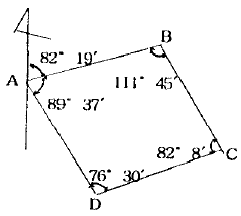
- 82° 19′
- 150° 34′
- 248° 26′
- 351° 56′
(정답률: 66%)
15. 삼각측량에서 조건식 수가 가장 많기 때문에 가장 높은 정확도를 얻을 수 있는 삼각망은?
- 단열 삼각망
- 사변형 삼각망
- 유심 삼각망
- 기선 삼각망
(정답률: 79%)
16. A, B 두 점간의 고저차를 구하기 위하여 그림과 같이 ①, ②, ③노선을 지나는 직접수준측량을 실시하였다. 그 결과가 다음과 같을 때 최확치는?
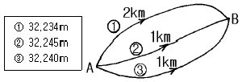
- 32.241m
- 32.239m
- 32.243m
- 32.247m
(정답률: 34%)
17. 같은 사람이 20″ 읽기(P1)와 40″ 읽기(P2) 트랜싯을 사용하여 측각했다. 이 관측치에 대한 중량비는?
- P1 : P2 = 2 : 1
- P1 : P2 = 4 : 1
- P1 : P2 = 6 : 1
- P1 : P2 = 9 : 1
(정답률: 42%)
18. 다음 측량에 관한 설명중 옳지 않은 것은?
- 수준측량 작업은 평면상의 위치를 구하는 것이다.
- 우리나라 수준점의 표고는 26.6871m 이다.
- 측량의 기준면이란 평균 해수면이다.
- 측량순서는 준비, 외업, 내업등으로 한다.
(정답률: 50%)
19. 교호수준측량의 공식으로 옳은 것은? (단, a1, a2 : 측점 A에서 읽은 값 b1, b2 : 측점 B에서 읽은 값)
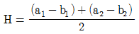
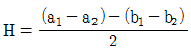
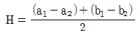
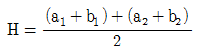
(정답률: 34%)
20. 아래 그림에서 B점에 장애물이 있어 함척을 거꾸로 세워 측정했다. C점의 표고는 얼마인가? (단, A점의 표고 = 10m임)
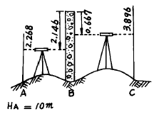
- 9.851m
- 10.851m
- 11.851m
- 12.851m
(정답률: 36%)
2과목: 임의 구분
21. 거리 1km당 수준측량 오차를 ± 3mm라 하면 거리 8km 왕복 수준측량의 오차는?
- ± 8mm
- ± 9mm
- ± 10mm
- ± 12mm
(정답률: 23%)
22. 정확히 검사를 할 수 있어 정밀을 요하는 측량에 많이 이용되나 중간점이 많을 때는 계산이 복잡해는 단점을 갖고 있는 야장기입 방법은 어느 것인가?
- 고차식
- 승강식
- 기고식
- 종단식
(정답률: 35%)
23. 그림과 같은 트래버스에서 AL 의 방위각이 19° 48' 26", BM 의 방위각이 310° 36' 43", 내각의 총합이 1190° 47'22"일 때 측각오차는?
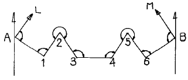
- 15"
- 25"
- 47"
- 55"
(정답률: 36%)
24. 방위각이 140° 35′ 20″ 일 때 역방위는?
- S 39° 24′ 40″ E
- E 39° 24′ 40″ S
- W 39° 24′ 40″ N
- N 39° 24′ 40″ W
(정답률: 44%)
25. 다음 트래버스측량 결과에서 위거 및 경거의 값은 어느것 인가? (단, AB측선방위 N30° W AB측선의 길이 100m)
- 위거:+86.60, 경거:-50.00
- 위거:-86.60, 경거:+50.00
- 위거:+50.00, 경거:-86.00
- 위거:-50.00, 경거:+86.00
(정답률: 39%)
26. 다각측량에서 거리의 총합이 1,250m 이고 위거의 오차가 -0.12m, 경거의 오차가 +0.25m 일 때 폐합비는?
- 1/4,510
- 1/4,520
- 1/4,530
- 1/2. 4,540
(정답률: 15%)
27. 삼각측량에서 노선측량이나 하천측량에 주로 사용되는 삼각망은?
- 단열삼각망
- 유심삼각망
- 사변형삼각망
- 결합삼각망
(정답률: 63%)
28. 구배가 15% 인 도로면상의 경사거리 135m 에 대한 수평거리는?
- 133.5m
- 130.0m
- 132.0m
- 136.5m
(정답률: 23%)
29. 삼각측량을 할 때 삼각망은 어떤 형태가 가장 좋은가?
- 정삼각형
- 직각삼각형
- 이등변삼각형
- 어떤 삼각형이든 관계없다.
(정답률: 86%)
30. 다음과 같은 삼각망에서 CD의 거리는?
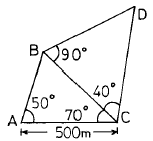
- 383.022m
- 433.013m
- 500.013m
- 577.350m
(정답률: 36%)
31. 한점 A에 평판을 세우고 또 한점 B에 세운 표척 (아래, 위 표지 간격 : 3m)을 보통 앨리데이드로 시준하니 연직잣눈이 위의 표지에서 +7.0, 아래 표지에서 +1.0 에 해당되었다. A,B 사이의 거리는?
- 20m
- 30m
- 40m
- 50m
(정답률: 20%)
32. 방위각의 설명중 옳은 것은 어느 것인가?
- 자북을 기준으로 한 방향각이다.
- 진북을 기준으로 한 방향각이다.
- 북극을 기준으로 한 방향각이다.
- 지구의 회전축을 기준으로 한 방향각이다.
(정답률: 56%)
33. 관측점이 17인 폐합트래버스의 외각의 합?
- 3240°
- 3420°
- 3600°
- 3780°
(정답률: 61%)
34. 교회법으로 평판측량할 때 시오삼각형(triangle of error)이 생기는 원인은?
- 정준오차
- 표정오차
- 구심오차
- 착오
(정답률: 44%)
35. 전방 교회법에서 방향선의 교차각으로 이상적인 각도는 얼마인가?
- 60°
- 90°
- 100°
- 120°
(정답률: 61%)
36. 다음 등고선의 성질중 옳지 못한 것은?
- 동일 등고선상의 모든 점의 높이는 같다.
- 한개의 등고선은 도중에 2개로 나누어지지 않는다.
- 등고선이 도면 안에서 폐합되는 경우는 산꼭대기나 분지가 된다.
- 등고선 간격이 좁은 곳은 넓은 곳보다 경사가 완만한 곳이다.
(정답률: 58%)
37. A, B두점의 표고가 각각 34.6m, 69.0m, AB 사이의 거리 D=120m일 때 AB사이를 10m간격으로 등고선을 넣을 때 40m 등고선이 지나는 점까지의 거리는 A에서부터 얼마 거리에 있는가?
- 10.2m
- 15.6m
- 18.8m
- 21.3m
(정답률: 49%)
38. 지형측량의 순서에서 세부측량에 해당되는 것은?
- 자료 수집
- 등고선 작도
- 트래버스 측량
- 스타디아 측량
(정답률: 34%)
39. 전체 면적이 300m2, 전토량이 2,030m3일 때 절토량과 성토량이 같은 기준면상의 높이는 얼마인가?
- 5.2m
- 5.5m
- 6.3m
- 6.8m
(정답률: 35%)
40. 차량이 도로의 곡선부를 달리게 되면 원심력이 생겨 도로 바깥쪽으로 밀리려 한다. 이것을 방지하기 위하여 도로 안쪽보다 바깥쪽을 높여준다. 이것을 무엇이라 하는가?
- 레일(R)
- 플랜지(F)
- 슬랙(S)
- 캔트(C)
(정답률: 58%)
3과목: 임의 구분
41. 단곡선 설치에서 교각 I=60° , 반경 R=100m, 곡선시점 B.C.의 추가거리가 140.65m일 때 곡선종점 E.C.의 거리는 얼마인가?
- 104.70m
- 140.65m
- 240.65m
- 245.37m
(정답률: 40%)
42. 화면거리 200mm, 비행고도 3,000m일 때 항공사진의 축척은?
- 1:10,000
- 1:15,000
- 1:20,000
- 1:25,000
(정답률: 54%)
43. 가로 10m, 세로 10m의 정방형 토지에 절토량을 구하려고 기준면으로부터 각 꼭지점의 높이를 측정하니 그림과 같은 결과가 나왔다. 절토량은?
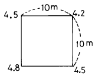
- 225m3
- 450m3
- 900m3
- 1,250m3
(정답률: 61%)
44. 노선을 건설할 때 하는 측량순서가 바르게 된 것은?
- 준공측량 ⇒ 공사측량 ⇒ 종횡단측량 ⇒ 지형측량
- 공사측량 ⇒ 종횡단측량 ⇒ 준공측량 ⇒ 지형측량
- 종횡단측량 ⇒ 공사측량 ⇒ 지형측량 ⇒ 준공측량
- 지형측량 ⇒ 종횡단측량 ⇒ 공사측량 ⇒ 준공측량
(정답률: 50%)
45. 스타디아 측량을 할 때 생기는 오차로서 거리계산에 가장 큰 영향을 미치는 것은? (단, K = 100, C = 0이다.)
- 협장을 읽을 때 1cm의 오차
- 연직각 α 를 읽을 때 1의 오차
- 기계고를 읽을 때 1cm의 오차
- C의 값에 1cm의 오차
(정답률: 24%)
46. 스타디아 측량시 협장이 100cm 이고 연직각이 30° 였다. 스타디아 정수 K=100, C=0 이면 고저차의 값은?
- 43.301m
- 50.501m
- 86.603m
- 102.603m
(정답률: 15%)
47. 삼각형 3변의 길이가 다음과 같을 때 면적을 구한 값은? (단, 3변의 길이는 a=32m, b=16m, c=20m)
- 2,016m2
- 1,309m2
- 201.6m2
- 130.9m2
(정답률: 25%)
48. 항공 사진측량에서 종중복도와 횡중복도는 일반적으로 몇 ％가 적당한가?
- 30％ 와 10％
- 40％ 와 15％
- 60％ 와 30％
- 70％ 와 40％
(정답률: 60%)
49. 중앙종거법에 의한 곡선 설치에서 M1은 M2의 몇 배인가?
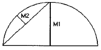
- 1배
- 2배
- 3배
- 4배
(정답률: 50%)
50. 항공사진에서 렌즈의 광축과 사진면이 교차하는 점은?
- 주점
- 연직점
- 투영점
- 등각점
(정답률: 19%)
51. 기본측량에 종사하는 자로서 측량실시를 위해 타인의 토지에 출입하는 경우에 대한 설명으로 옳은 것은?
- 타인의 토지에는 임의로 출입한다.
- 장해물은 임의로 제거한다.
- 타인의 토지, 건물등에 출입할 때에는 점유자에게 미리 통지 하는게 원칙이다.
- 임시 설치 표지를 설치하기 위하여 점유자를 알 수 없을 때에는 토지를 일시 사용 할 수 없다.
(정답률: 50%)
52. 측량법에 정의된 측량업의 종류가 아닌 것은?
- 일반측량업
- 도시계획측량업
- 연안조사측량업
- 지도제작업
(정답률: 22%)
53. 다음 기관 중 지명위원회를 둘 수 없는 곳은?
- 산업자원부
- 건설교통부
- 서울특별시
- 안산시
(정답률: 29%)
54. 측량법에 정의된 용어 중 기본측량이라 함은?
- 모든 소유권에 기본을 두는 측량
- 모든 측량권리, 이익에 중점을 두는 측량
- 공공의 이해에 관계가 있는 측량
- 모든 측량의 기초가 되는 측량
(정답률: 81%)
55. 다음 측량표중 영구표지가 아닌 것은?
- 삼각점 표석
- 자기(磁氣)점 표석
- 측표
- 검조장
(정답률: 36%)
56. 기본측량을 위하여 설치된 측량표의 관리는?
- 건설교통부장관이 한다.
- 관할시장, 군수가 한다.
- 국립지리원장이 한다.
- 관할 도지사가 한다.
(정답률: 40%)
57. 공공측량의 기준으로 가장 타당한 것은?
- 기본측량과 지적측량의 성과
- 기본측량 또는 다른 공공측량의 성과
- 삼각점 또는 수준점
- 기본측량의 성과
(정답률: 46%)
58. 측량업의 등록취소가 되는 경우가 아닌 것은?
- 타인에게 등록증을 대여한 때
- 측량업을 등록한 후 6개월 동안 영업을 개시하지 않은 때
- 허위, 부정한 방법으로 측량업의 등록을 받은 때
- 측량업자가 한정치산자의 선고를 받은 때
(정답률: 47%)
59. 측량업 등록을 한 자는 상호가 변경 되었을 때 변경이 있는 날로부터 며칠이내에 변경 등록을 하여야 하는가?
- 7일
- 10일
- 20일
- 30일
(정답률: 57%)
60. 측량성과 또는 측량기록을 무단으로 복제한 자에 대한 벌칙은?
- 2년 이하의 징역 또는 500만원 이하의 벌금
- 200만원 이하의 과태료
- 3년 이하의 징역 또는 1000만원 이하의 벌금
- 1년 이하의 징역 또는 300만원 이하의 벌금
(정답률: 27%)
(149.8 + 149.2 + 150.8 + 150.2) / 4 = 150.0
따라서, 측정값들의 평균은 150.0m 이다. 하지만, 문제에서 "오차는 측정회수에 비례" 라고 했으므로, 측정회수가 증가할수록 오차도 커질 것이다. 따라서, 최확값은 평균값인 150.0m 보다 조금 더 큰 값인 150.218m 이 될 것이다. 따라서, 정답은 "150.218m" 이다.